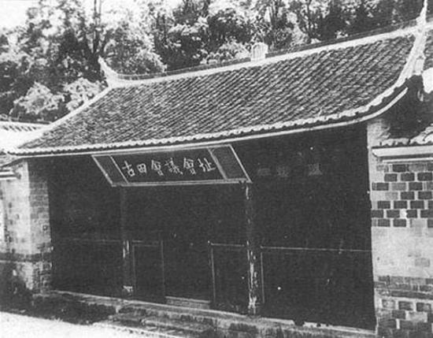
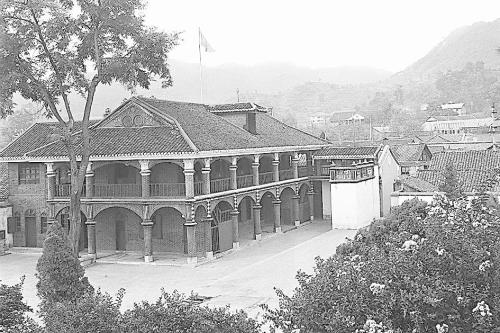
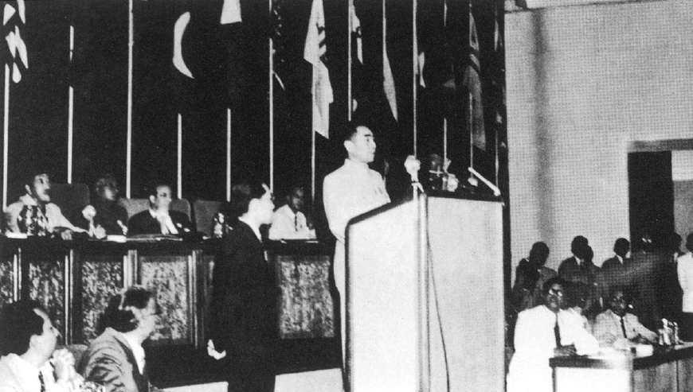

历史会议
历史会议来自1921年的一封信
中共一大
 中国共产党第一次全国代表大会于1921年7月23日至8月初在
上海法租界望志路106号（现兴业路76号）和浙江嘉兴召开。
上海的李达、李汉俊，北京的张国焘、刘仁静，武汉的董必武
、陈潭秋，长沙的毛泽东、何叔衡，广州的陈公博，济南的王
尽美、邓恩铭，旅日的周佛海，以及由陈独秀指定的代表包惠
僧出席会议，代表全国50多名党员。共产国际代表马林和尼克
尔斯基也出席了大会。
一大召开标志着中国共产党的正式成立，犹如一轮红日在东方
冉冉升起，照亮了中国革命的前程。这是近代中国社会进步和
革命发展的客观要求，是开天辟地的大事变。毛泽东说：“中国
产生了共产党，这是开天辟地的大事件”。自从有了中国共产党
，中国革命的面目就焕然一新了。
最后，一大选举中央领导机构，代表们认为目前党员人数少、地
方组织尚不健全，暂不成立中央委员会，先建立三人组成的中央
局，并选举陈独秀任书记，张国焘为组织主任，李达为宣传主任。
党的第一个中央机关由此产生。会议在齐呼“第三国际万岁”、“中
国共产党万岁”声中闭幕。
中国共产党第一次全国代表大会于1921年7月23日至8月初在
上海法租界望志路106号（现兴业路76号）和浙江嘉兴召开。
上海的李达、李汉俊，北京的张国焘、刘仁静，武汉的董必武
、陈潭秋，长沙的毛泽东、何叔衡，广州的陈公博，济南的王
尽美、邓恩铭，旅日的周佛海，以及由陈独秀指定的代表包惠
僧出席会议，代表全国50多名党员。共产国际代表马林和尼克
尔斯基也出席了大会。
一大召开标志着中国共产党的正式成立，犹如一轮红日在东方
冉冉升起，照亮了中国革命的前程。这是近代中国社会进步和
革命发展的客观要求，是开天辟地的大事变。毛泽东说：“中国
产生了共产党，这是开天辟地的大事件”。自从有了中国共产党
，中国革命的面目就焕然一新了。
最后，一大选举中央领导机构，代表们认为目前党员人数少、地
方组织尚不健全，暂不成立中央委员会，先建立三人组成的中央
局，并选举陈独秀任书记，张国焘为组织主任，李达为宣传主任。
党的第一个中央机关由此产生。会议在齐呼“第三国际万岁”、“中
国共产党万岁”声中闭幕。

古田会议1928年4月，毛泽东率领的工农革命军与朱德、陈毅率领的湘南起义 部队在井冈山胜利会师，合编为工农革命军第四军，5月改编为中国 工农红军第四军，简称红四军，朱德任军长，毛泽东任党代表，陈毅 任政治部主任。11月，红四军前敌委员会成立，毛泽东任书记。随后 ，红四军在朱德、毛泽东、陈毅等领导下，打破了敌人对井冈山革命 根据地的多次围攻，并于1929年1月起向赣南、闽西进军，开创了赣 南、闽西革命根据地，奠定了后来的中央革命根据地的基础。 随着形势的发展和革命队伍的扩大，红四军及其党组织内加入了大量 农民和其他小资产阶级出身的同志，加上环境险恶，战斗频繁，生活 艰苦，部队得不到及时教育和整训。因此，极端民主化、重军事轻政 治、不重视建立巩固的根据地、流寇思想和军阀主义等非无产阶级思 想在红四军内滋长严重。作为红四军党的前委书记的毛泽东曾力图纠 正这些错误的思想倾向。但是，由于当时的历史条件，红四军党内特 别是领导层内在创建根据地、在红军中实行民主集中等原则问题上存 在着认识上的分歧和争论。因而，毛泽东的正确主张没有能够为红四 军领导层的大多数同志所接受。 1929年8月下旬，陈毅抵达上海，向党中央如实汇报了红四军的工作。 中央政治局专门召开会议，听取了陈毅关于红四军全部情况的详细汇 报，决定由周恩来、李立三、陈毅3人组成专门委员会，深入研究讨 论红四军的问题。经过一个月的讨论，形成了陈毅起草、周恩来审定 的《中共中央给红四军前委的指示信》，即著名的“九月来信”。“九 月来信”肯定了红四军建立以来所取得的成绩和经验，要求红四军前 委和全体干部战士维护朱德、毛泽东的领导，明确指出毛泽东“应仍 为前委书记”。
遵义会议

1935年1月15至17日，中共中央政治局在遵义召开扩大会议。会议着重
总结了第五次反“围剿”失败的经验教训。首先由博古作关于反对第五次“
围剿”的总结报告。他过分强调客观困难，把失败原因归之于反动力量的
强大，而不承认主要是由于他和李德压制正确意见，在军事指挥上犯了严
重错误造成的。接着，周恩来就军事问题作副报告，指出第五次反“围剿”
失败的主要原因是军事领导的战略战术的错误，并主动承担责任，作了诚
恳的自我批评。同时也批评了博古和李德。张闻天按照会前与毛泽东、王
稼祥共同商量的意见，作反对“左”倾军事错误的报告，比较系统地批评了
博古、李德在军事指挥上的错误。毛泽东接着作了长篇发言，对博古、李
德在军事指挥上的错误进行了切中要害的分析和批评，并阐述了中国革命
战争的战略战术问题和今后在军事上应采取的方针。王稼祥、朱德、刘少
奇等多数同志也相继发言，不同意博古的总结报告，同意毛泽东、张闻天
提出的意见。会议最后指定张闻天起草决议，委托常委审查，然后发到支
部讨论。
会后，张闻天根据与会多数人特别是毛泽东的发言内容，起草了《中央关
于反对敌人五次“围剿”的总结的决议》（简称遵义会议决议）。这个决议
，在中共中央离开遵义到达云南扎西（今威信）县境后召开的会议上正式
通过。决议明确指出，博古、李德以单纯防御路线代替了决战防御，以阵
地战、堡垒战代替了运动战，是第五次“围剿”不能粉碎的主要原因。决议
充分肯定了毛泽东等在领导红军长期作战中形成的战略战术基本原则。
遵义会议还制定了红军尔后的任务和战略方针。决定红军渡过长江在成都之
西南或西北地区建立根据地。会后，又根据敌情的变化，决定中央红军在
川滇黔三省广大地区创造新的根据地。
遵义会议改组了中央领导机构，增选毛泽东为中共中央政治局常务委员。并
决定取消“三人团”，仍由中革军委主要负责人朱德、周恩来指挥军事，周恩
来为下最后决心的负责者。随后，进一步调整了中央领导机构。2月5日，在
川滇黔交界的一个鸡鸣三省的村子，中央政治局常委分工，决定由张闻天代替
博古负中央总的责任（习惯上也称之为总书记）；以毛泽东为周恩来在军事指
挥上的帮助者。3月中旬，在贵州鸭溪、苟坝一带，成立了由毛泽东、周恩来
、王稼祥组成的新的“三人团”，周恩来为团长，负责指挥全军的军事行动。

万隆会议1953年8月，时任印尼总理沙斯特罗阿米佐约率先提出召开亚非会议设想。 1954年4月，南亚五国总理在科伦坡召开会议，讨论共同关心的国际问题。 会上，五国总理讨论了印尼总理提出的“举行一次更广泛的亚非国家会议的 可能性”的倡议。 1954年12月底，南亚五国总理在印尼茂物举行会议，决定与会五国联合发 起召开亚非会议，邀请包括中国在内的25个亚非国家和地区参加，并定于 1955年4月在万隆举行。 美国为了达到阻止亚非会议的召开，把矛头首先对准新中国。美国还捏造说 中国要“夺取亚非世界领导权”，已对远东“构成了尖锐、迫切的威胁”，极 力挑拨中国与亚非国家的关系，人为地制造对中国的恐惧和疑虑。详见词条 ：克什米尔公主号事件。 1955年4月18-24日，万隆会议隆重召开，代表着占世界面积将近1/4（310 0多万平方公里）和世界人口约2/3（14.4亿人）的29个亚非国家共计340名 代表出席了会议，并有5个国家派代表团列席了会议。 会上中国姿态：中国政府自始至终对亚非会议持积极支持态度。中国政府代表 团由周恩来总理兼外长率领，代表是国务院副总理陈毅、外贸部长叶季壮、外 交部副部长章汉夫和中国驻印尼大使黄镇，代表团顾问有廖承志、乔冠华、陈 家康、黄华等。 中国代表团基于对当时形势和与会国的复杂性的分析而确定的参加亚非会议的总 方针是：争取扩大世界和平统一战线，促进民族独立运动，并为建立和加强我国 同亚非国家的关系创造条件，力求会议取得成功。 万隆会议十项原则是在和平共处五项原则基础上提出，而和平共处五项原则最先 是周恩来总理于1953年12月底在会见来访的印度代表团时提出的。和平共处五 项原则提出后，被越来越多的国家、国际组织和国际会议所承认和接受，并载入 了包括联合国大会通过的宣言在内的一系列重要国际性文件，对推动国际关系朝 着正确方向发展，发挥了重大历史性作用。